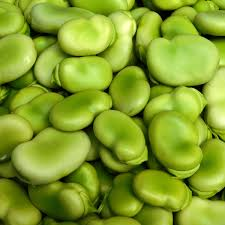
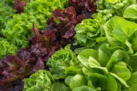
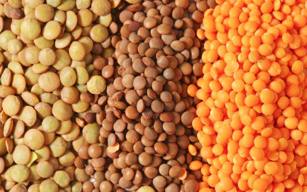
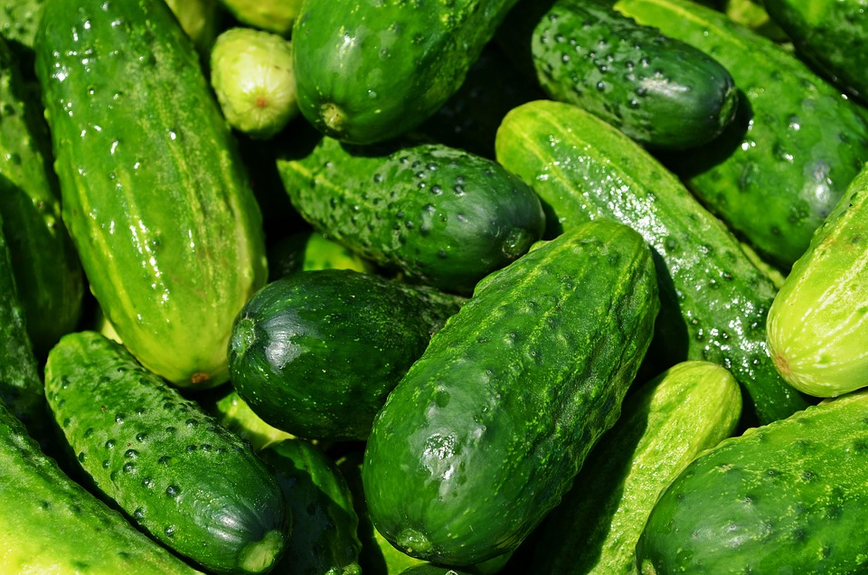
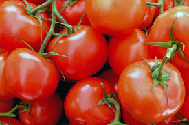
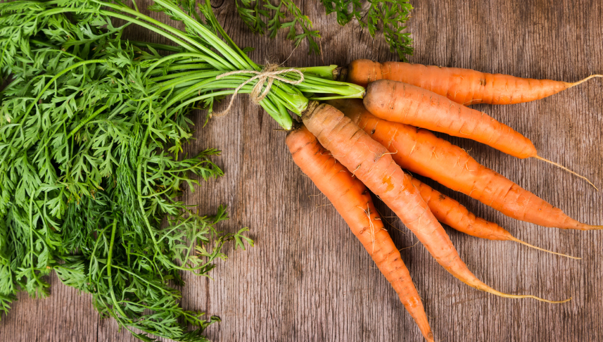

Acerca de
Invernadero Verde Quito es un innovador proyecto que nace en el corazón de la capital
ecuatoriana con el objetivo de promover la sostenibilidad y la producción agrícola local en un entorno
controlado y eficiente. Inaugurado este mes de abril de 2025, el invernadero se ubica en las afueras de
la ciudad, aprovechando las condiciones climáticas de Quito para cultivar una amplia variedad de
productos frescos y orgánicos durante todo el año.
El invernadero está equipado con tecnologías de última generación que permiten optimizar el uso del
agua, la energía y los recursos naturales, haciendo de él un modelo de eficiencia y cuidado
medioambiental. Gracias a su sistema de cultivo hidropónico y la automatización de procesos, los
agricultores del proyecto logran obtener productos libres de pesticidas y de alta calidad, garantizando
así alimentos más saludables para los consumidores locales.
Además de su enfoque agrícola, el invernadero tiene un fuerte compromiso con la educación y la
comunidad. Se llevan a cabo visitas guiadas y talleres sobre prácticas agrícolas sostenibles, y se
promueve la participación de los jóvenes en la ciencia y tecnología aplicada a la agricultura.
El proyecto Invernadero Verde Quito no solo busca abastecer a los mercados locales, sino también
contribuir al desarrollo de una ciudad más verde y autosuficiente, que apoya tanto a los pequeños
productores como a la comunidad en general.

Habas
Mayor calidad y frescura
✔ Protección contra plagas y clima extremo
✔ Cultivo controlado sin pesticidas agresivos
✔ Disponibilidad todo el año
Precio
1$ el kilo

Lechuga
✔ Hojas más tiernas y frescas
✔ Libre de contaminantes del exterior
✔ Cultivo constante todo el año
Precio
1$ la unidad

Lentejas
✔ Control de humedad ideal para su desarrollo
✔ Mejor rendimiento y calidad en el grano
✔ Menor uso de químicos
Precio
2$ el kilo

Pepinos
✔ Frutos más uniformes y crujientes
✔ Menor riesgo de plagas
✔ Producción continua sin importar la estación
Precio
3$ el kilo

Tomates
✔ Más dulces y jugosos
✔ Menos pesticidas
✔ Siempre disponibles, todo el año
Precio
1.5$ el kilo

Zanahorias
✔ Colores más intensos y sabor más dulce
✔ Suelo controlado, sin contaminantes
✔ Mejor tamaño y textura
Precio
1$ el kilo